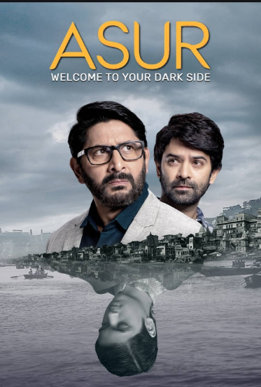
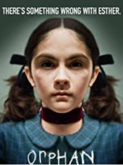
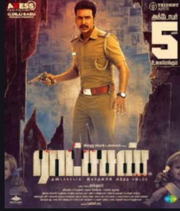
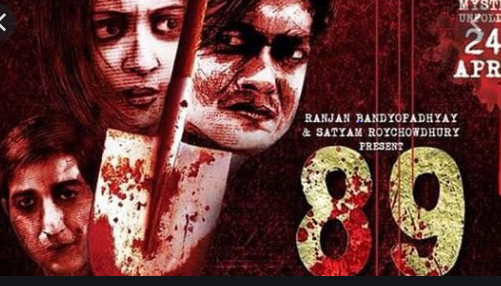

ASUR
In Hindu mythology 'Asur‘is a demonic character, but Asur is in everyone.
‘Kalki’ is the last Avatar among 10 ‘Bishnu Avatars’ and He hasn’t come yet to the world.
What if a serial-killer believes that he will challenge God to come to the world by welcoming the demonic side of everyone ?
‘Kalki’ is the last Avatar among 10 ‘Bishnu Avatars’ and He hasn’t come yet to the world.
What if a serial-killer believes that he will challenge God to come to the world by welcoming the demonic side of everyone ?
ORPHAN
A couple adopted a girl after their last miscarriage.
The girl was a 33 year-old woman actually.
Because of dwarfism and body-shaming, a huge anger gathered in her mind
And that made her killing a lot of people.
The girl was a 33 year-old woman actually.
Because of dwarfism and body-shaming, a huge anger gathered in her mind
And that made her killing a lot of people.
RATSASAN
A teenage-boy,Christopher, is suffering from Werner-Syndrome.
He can’t make any friend in school.
But a girl named Sophie took pity on him and befriended him.
Christopher soon began to develop feelings for Sophie.
But unfortunately, he is heartbroken when she turns down his love and is soon ridiculed at school.
Then he killed that girl in anger, and became a serial killer eventually.
He can’t make any friend in school.
But a girl named Sophie took pity on him and befriended him.
Christopher soon began to develop feelings for Sophie.
But unfortunately, he is heartbroken when she turns down his love and is soon ridiculed at school.
Then he killed that girl in anger, and became a serial killer eventually.
89
A boy used to get scolded not for being first in any exam by his father.
He killed his father for get rid of that torture.
After that he promised himself that he would be first in serial killing also.
89 was the highest number of murders in the world by any serial killer.
But after 89th murder, he was caught by police and committed suicide for keeping his promise.
He killed his father for get rid of that torture.
After that he promised himself that he would be first in serial killing also.
89 was the highest number of murders in the world by any serial killer.
But after 89th murder, he was caught by police and committed suicide for keeping his promise.